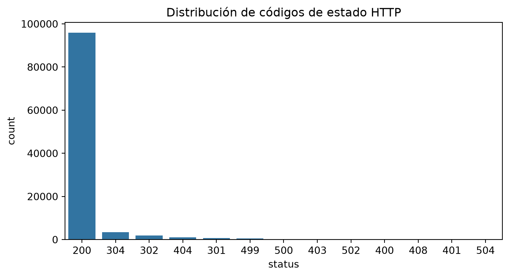
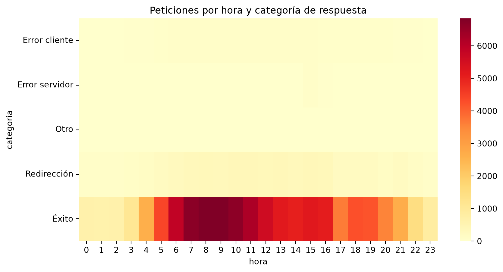

Análisis de logs de acceso de un servidor web con Pandas
Author
Fred Ruiz, Bryan Paucar, Xiomara Valenzuela
Published
November 3, 2026
1. Introducción y Objetivos
El presente informe tiene como objetivo principal analizar el comportamiento de un servidor web a través de la interpretación y procesamiento de sus registros de acceso (logs). Utilizando herramientas de ciencia de datos con Python (Pandas, Seaborn y Plotly) integradas en un entorno reproducible con Quarto, buscamos:
Estructurar y limpiar datos masivos de texto plano.
Evaluar la estabilidad y el rendimiento general del servidor.
Detectar posibles anomalías, errores de navegación o comportamientos sospechosos (como bots y escaneos automatizados) para proponer medidas correctivas desde el punto de vista de la administración de sistemas (SysAdmin).
2. Carga y limpieza de los datos del servidor
En este apartado cargamos nuestra muestra del archivo de registros (muestra.log) utilizando una expresión regular optimizada con Pandas para separar cada línea en columnas útiles de forma masiva. El log es texto plano. La regex separa cada línea en columnas y después se convierten los tipos (si la fecha no es fecha no se puede agrupar por hora; si bytes no es número no se pueden hacer medias). errors=“coerce” convierte los valores raros en nulos en lugar de romper.
Code
import pandas as pdimport matplotlib.pyplot as pltimport seaborn as snsimport plotly.express as pxpatron =r'(\S+)\S+\S+\[(.*?)\] "(\S+)(.*?)(\S+)" (\d{3})(\S+) "(.*?)" "(.*?)"'columnas = ["ip", "fecha", "metodo", "url", "protocolo", "status", "bytes", "referer", "user_agent"]withopen("data/muestra.log", encoding="utf-8", errors="ignore") as f: lineas = f.read().splitlines()df = pd.Series(lineas).str.extract(patron)df.columns = columnasprint("Líneas sin parsear:", df["ip"].isna().sum())df = df.dropna(subset=["ip"]).copy()df["fecha"] = pd.to_datetime(df["fecha"], format="%d/%b/%Y:%H:%M:%S %z", utc=True)df["status"] = df["status"].astype(int)df["bytes"] = pd.to_numeric(df["bytes"], errors="coerce")df["hora"] = df["fecha"].dt.hourdf["dia"] = df["fecha"].dt.datedf.head()
Líneas sin parsear: 2
ip
fecha
metodo
url
protocolo
status
bytes
referer
user_agent
hora
dia
0
54.36.149.41
2019-01-22 00:26:14+00:00
GET
/filter/27|13%20%D9%85%DA%AF%D8%A7%D9%BE%DB%8C...
HTTP/1.1
200
30577
-
Mozilla/5.0 (compatible; AhrefsBot/6.1; +http:...
0
2019-01-22
1
91.99.72.15
2019-01-22 00:26:37+00:00
GET
/product/14496/25676/%D8%B3%D8%B1-%D8%B4%D9%88...
HTTP/1.1
200
40134
-
Mozilla/5.0 (Windows NT 6.1; WOW64) AppleWebKi...
0
2019-01-22
2
5.211.97.39
2019-01-22 00:26:56+00:00
GET
/image/4574/productModel/200x200
HTTP/1.1
200
3577
https://www.zanbil.ir/m/browse/meat-grinder/%D...
Mozilla/5.0 (iPhone; CPU iPhone OS 10_3_2 like...
0
2019-01-22
3
66.249.66.194
2019-01-22 00:27:11+00:00
GET
/filter/b36,p3
HTTP/1.1
200
35145
-
Mozilla/5.0 (compatible; Googlebot/2.1; +http:...
0
2019-01-22
4
46.224.77.32
2019-01-22 00:27:33+00:00
GET
/image/20120?name=12.jpg&wh=200x200
HTTP/1.1
200
4520
-
Dalvik/1.6.0 (Linux; U; Android 4.2.2; HUAWEI ...
0
2019-01-22
Qué hacemos hecho aquí: El archivo original del servidor es simplemente un bloc de notas gigante lleno de líneas de texto desordenadas.
Por qué se hace: Usamos una herramienta inteligente (llamada regex) para recortar cada renglón y ordenarlo en una tabla limpia (con columnas como la IP del usuario, la hora, la página que visitó, etc.). También nos aseguramos de que las fechas y los números se entiendan bien para poder hacer operaciones matemáticas después.
Sección 2: Exploración y resúmenes estadísticos
Antes de sacar conclusiones hay que saber si los datos son fiables. Los tres resúmenes responden a: ¿hay muchos errores?, ¿cuándo hay más carga?, ¿alguna IP hace demasiadas peticiones?
Qué hacemos hecho aquí: Hacemos una revisión general de los datos antes de creer ciegamente en ellos.
Por qué se hace: Nos preguntamos cosas básicas pero vitales: ¿Hay muchos errores?, ¿A qué hora se conecta más gente?, ¿Hay alguna computadora (IP) que esté repitiendo peticiones de forma exagerada? Esto nos dice si los datos son fiables.
Sección 3: Enriquecimiento de datos (Merge)
## 3. Enriquecimiento de datos (Merge)Cumple el requisito de combinar datos y traduce números a significado. how="left" conserva todas las filas del log aunque algún código no esté en la tabla.
Code
# Leer el CSV especificando la coma como separadorcodigos = pd.read_csv("data/codigos_http.csv", sep=",", on_bad_lines="skip")# Mostrar las columnas detectadas para verificarprint("Columnas detectadas en el CSV:", codigos.columns.tolist())# Asegurar que el tipo de dato coincida para el crucedf["status"] = df["status"].astype(int)codigos["status"] = codigos["status"].astype(int)# Realizar el mergedf = df.merge(codigos, on="status", how="left")df["categoria"] = df["categoria"].fillna("Otro")df[["status", "descripcion", "categoria"]].head()
Columnas detectadas en el CSV: ['status', 'descripcion', 'categoria']
status
descripcion
categoria
0
200
OK
Éxito
1
200
OK
Éxito
2
200
OK
Éxito
3
200
OK
Éxito
4
200
OK
Éxito
Qué hacemos hecho aquí: En los registros del servidor, los resultados aparecen con números fríos (como 200 o 404). Usamos una pequeña tabla externa para traducir esos números a un idioma humano.
Por qué se hace: Así convertimos un número aburrido en una categoría clara de negocio (por ejemplo, saber que un 404 significa un “Error de cliente / Página no encontrada”).
Sección 4: Agregaciones, tablas pivote y filtrado avanzado
## 4. Agregaciones, tablas pivote y filtrado avanzado`groupby` compara métricas entre grupos, `pivot_table` cruza dos variables (hora y tipo de respuesta), `loc` filtra por condición y `iloc` por posición. Sirven para aislar comportamientos anómalos, como un bot o un escaneo.
Qué hemos hecho aquí: Agrupamos la información por horas, por tipo de dispositivo o por dirección IP para cazar comportamientos extraños.
Por qué se hace: Nos ayuda a descubrir si detrás de las visitas hay un usuario normal o si se trata de un robot malintencionado (un bot) intentando hackear o saturar la página web mediante peticiones repetitivas o descargas muy pesadas.
Sección 5: Visualización del tráfico
## 5. Visualización**Motivo:** Un gráfico comunica de un vistazo lo que una tabla grande esconde. El tercero es animado e interactivo, como pide el enunciado.
Code
plt.figure(figsize=(8, 4))sns.countplot(data=df, x="status", order=df["status"].value_counts().index)plt.title("Distribución de códigos de estado HTTP")plt.show()

Code
plt.figure(figsize=(10, 5))sns.heatmap(pivot.T, cmap="YlOrRd")plt.title("Peticiones por hora y categoría de respuesta")plt.show()

Code
horas = df.groupby(["dia", "hora"]).size().reset_index(name="peticiones")horas["dia"] = horas["dia"].astype(str)fig = px.bar(horas, x="hora", y="peticiones", animation_frame="dia", range_y=[0, horas["peticiones"].max()], title="Evolución del tráfico por hora, día a día")fig.show()
Qué hacemos aquí: Convertimos las tablas de datos en gráficos visuales fáciles de entender a simple vista (como gráficos de barras y mapas de calor) y añadimos conclusiones prácticas.
Por qué se hace: Una imagen vale más que mil palabras. Debajo de cada gráfico explicamos tres cosas clave para que el informe parezca de un profesional de la ciberseguridad (un SysAdmin):
Qué se ve: El dato exacto (ej. “El 4% de los errores son de tipo 404”).
Qué significa: El contexto real (ej. “Son enlaces rotos o alguien buscando fallos en la web”).
Qué haría un experto: La solución (ej. “Corregir los enlaces o bloquear la IP sospechosa”).